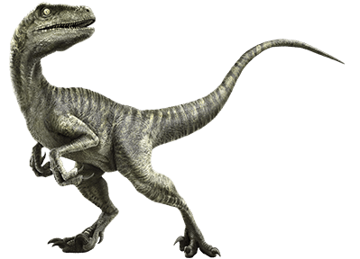

Velociraptor is a carnivorous dinosaur which lived during the Cretaceous Period—around
75 million years ago. This species of dinosaur was first discovered by Peter Kaisen in the Gobi
Desert on August 11th, 1923. A year later, it was given the name Velociraptor. This name combines
the Latin word “Velox”, which means swift and the Latin word “Raptor” which means robber.
While this dinosaur has received a lot of attention because it is prominently
featured in the Jurassic Park series of movies, scientists believe that the ones in
the movie bear little resemblance to those which actually lived in real life. The dinosaurs
depicted in these movie were actually based on Deinonychus and not true Velociraptors. In real life,
they were only about the size of a turkey and had feathers, and weren’t the man-sized reptilian dinosaurs they
were depicted in the film. The average Velociraptor weighed approximately 30 pounds and stood a
little bit over 3 feet tall.
Another interesting fact about this dinosaur is that it isn’t
believed to have been as fast as it was portrayed in the Jurassic
Park films. In fact, most scientists believe that these dinosaurs could
run at a top speed of about 40 miles per hour. Much slower than a cheetah (60 mph)
or a lion (50 mph), although it is quite a bit faster than a human at top speed (28 mph).
According to the latest research, it is believed that the Velociraptor hunted and
scavenged for small animals. Its diet most likely consisted of reptiles, small mammals,
insects and smaller dinosaurs. Although it is usually depicted as being an aggressive hunter in
the movies, more than likely it was more of a scavenger than a hunter.